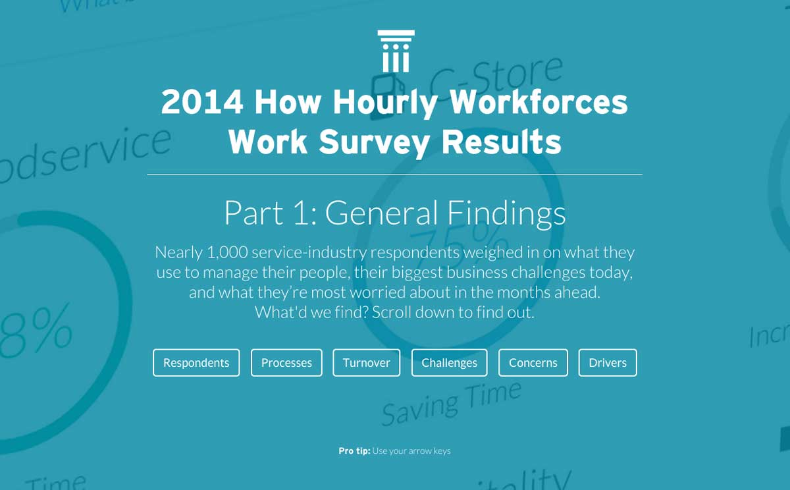
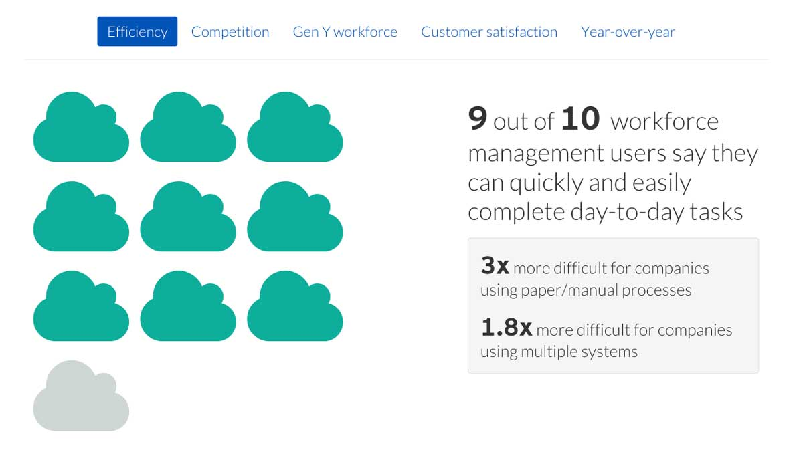

Data visualization of survey results
The PeopleMatter Institute (PMI), the thought leadership division of PeopleMatter, conducts an annual survey of customers and prospects. After the research department analyzes the results, the information must be presented to the respondents and the rest of the world.
Problem
The previous survey reports had all been delivered in a PDF or other non-web based asset. This format is not as appropriate for visulizing data as a dynamic webpage.
Solution
Created a modular set of graphs, pictograms and charts (based on a kit of purchased CSS and javascript files) to present statistics and insights gathered from the survey in an engaging and effective manner.
My role
- Planning
- Design
- HTML
We had pages and pages of results in multiple spreadsheets that had to be segmented somehow. I worked with our data crunchers to come up with the sections for the page. I thought a reader of these results would find it useful to be able to easily navigate through the sections using their arrow keys.
Our web developers helped me modify the CSS/javascript pack we had purchased to let us build things like this to display our data in a more approachable infographic format.
Who doesn't like a cool looking animated donut chart? Nearly all the graphs on the result pages are animated in some fashion when that element comes into view for the first time to the user. I think the animations are actually quite useful. They make the graphs and charts something you pause and actually try to understand rather than just scroll past.